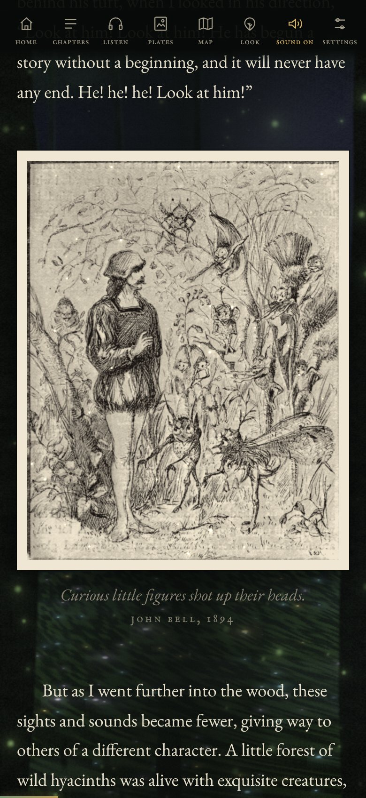

I
The plates come alive
John Bell’s twenty-five plates for the illustrated edition of 1894 sit beside the passages they show. When one reaches the middle of the screen it begins, very quietly, to live: the sea moves, the moon breathes, a fire flickers, mist drifts, specks of light go through the air. A plate seen for the first time develops out of the paper, as a print does.
